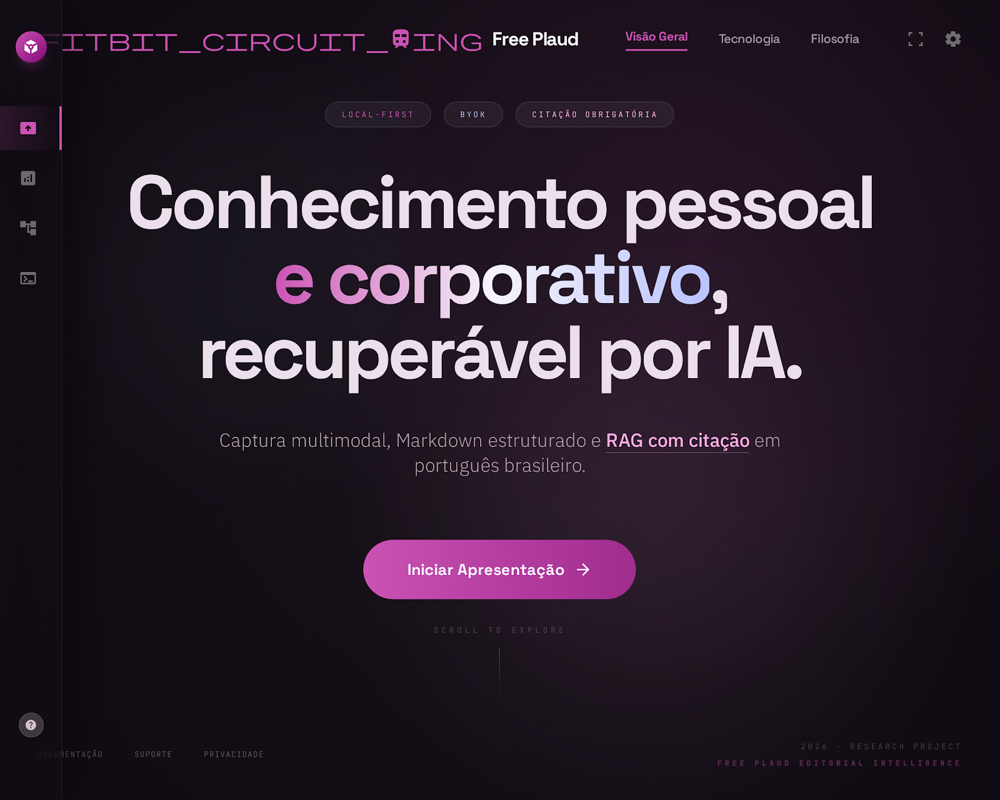
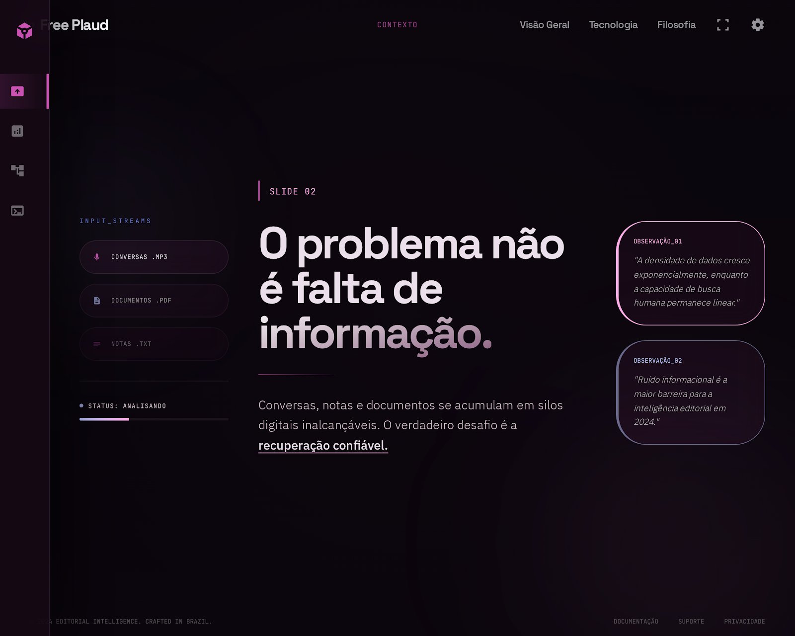
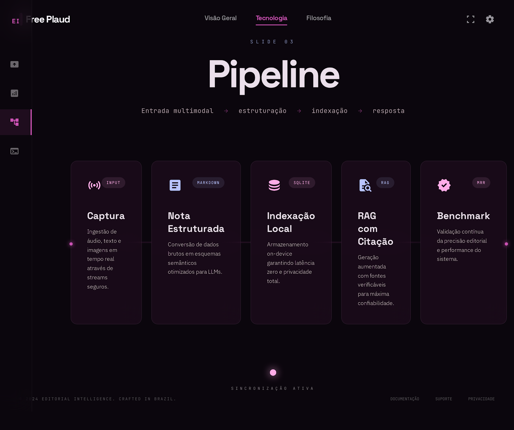
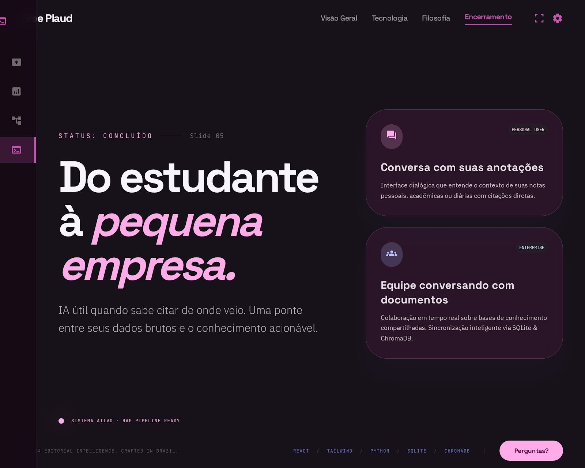

Um painel so para abrir, revisar e apresentar as 5 telas.
O hub agora funciona como centro de comando: entra na apresentacao em um clique, mostra o mapa completo dos slides, resume os atalhos e deixa a execucao local explicita.
Cada slide agora tem rota fixa e pode ser acessado pelo menu lateral ou por atalho.
Hub, salto rapido, fullscreen e ajuda ficaram padronizados em toda a navegacao.
Use .\start.ps1 para subir o servidor e abrir a home automaticamente.
Capa com CTA, mensagem central e atmosfera de abertura.
A home agora te joga direto na melhor entrada da narrativa, sem depender de abrir pasta por pasta.
Entre em qualquer trecho da narrativa.
Capa
Abertura editorial, headline principal e CTA de entrada.
Contexto
Define o problema, os silos de informacao e o por que do produto.
Pipeline
Mostra o fluxo tecnico da captura ate a resposta com citacao.
Diferenciais
Enquadra confianca, custo operacional e benchmark da proposta.
Conclusao
Fecha a historia e reforca valor para estudante e pequena empresa.
Escolha a tela pelo snapshot real.
Os cards abaixo usam os screenshots reais do projeto para virar menu visual de navegação.

Abertura editorial e proposta central
Tese principal, CTA inicial e atmosfera visual da narrativa.

Problema e excesso de informacao
Mostra por que dados soltos nao viram conhecimento recuperavel sem estrutura.

Arquitetura de captura ate resposta
Explica o fluxo multimodal, indexacao local e camada de RAG com citacao.
Confianca, custo e benchmark
Resume o que torna a proposta defensavel do ponto de vista de produto e operacao.

Fechamento para estudante e pequena empresa
Arremata a narrativa e reforca o valor de uma IA rastreavel.